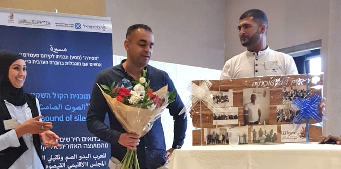

התוכנית "הקול השקט" המיועדת לאוכלוסיית הבדואים החירשים וכבדי השמיעה מהמועצה האזורית אל קסום בנגב נחנכה באירוע חשיפה. התוכנית היא פרי יוזמתו של סולימאן אזברגה, בוגר מחזור ב' של תוכנית מנדל למנהיגות מקומית ברהט, ופותחה במהלכה בתור פרויקט אישי.
עם תום התוכנית פעל סולימאן לגייס שותפים ומשאבים לפרויקט, ובזכות התמדתו, נחישותו ואמונתו בצורך לתת מענה לאוכלוסייה זו, זכה לאחרונה בתקציב משמעותי למימוש הרעיון מטעם משרד העבודה והרווחה, ג'וינט ישראל והמועצה האזורית אל קסום. מטרת התוכנית לשלב את הבדואים החירשים וכבדי השמיעה בחיים עצמאיים בקהילה, לחזק את התקשורת בין ההורים לילדים, ולהעלות את המודעות של אוכלוסייה זו למיצוי זכויותיה. מטרת התוכנית להביא לאיכות חיים טובה יותר ליחידים ומשפחותיהם.

במסגרת האירוע הוצג
מחקרן של
ד"ר נוזהה אלאסד אלהוזייל וד"ר מרים לוינגר, המתמקד במאפיינים הייחודיים של אוכלוסיית הבדואים כבדי השמיעה בנגב. המחקר הביא עדויות משמעותיות על תפיסת לקויות השמיעה בקרב הבדואים והדגיש את חשיבות עבודת ההתאמה, ההכרה והתרגום של הפעולות הנדרשות לטיפול בנושא לקויות השמיעה בקרב האוכלוסייה הבדואית בנגב.
יצויין כי סלימאן וצוותו, המורכב ברובו מאנשי צוות מהחברה הבדואית, בנו את התוכניות השונות בשיתוף עם אנשי מקצוע ממשרד הרווחה ועם מומחים מהאקדמיה.
יוזמה מנהיגותית זו מעוררת תקווה ומהווה צעד נוסף בשאיפה לשיפור איכות החיים בנגב.
{kind=link}
{kind=link}